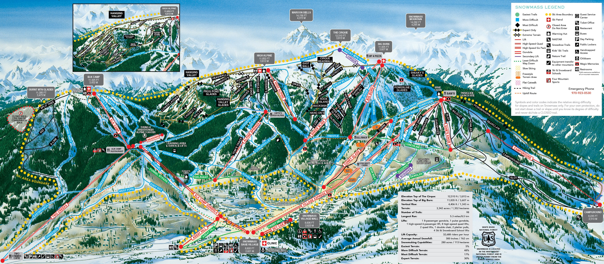

A guide to Aspen Snowmass

Snowmass is the largest mountain in the Aspen area with countless activities and various level slopes!
In addition Snowmass offers a lovely village with plenty of food options and gear shops.
Here are my top 3 favorite places to eat while skiing!
- 1. Up 4 Pizza (get the cookies)
- 2. Sam's Knob
- 3. High Alpine
Here are my top 3 favorite runs!
- 1. Long Shot: a short hike up and a scenic 3 miles downhill
- 2. Campground: a long and isolated run great for cool-downs
- 3. Cookies: Don't let the name fool you, it's a short, steep, exhilerating tree run
Here are my top 3 favorite non-skiing activities!
- 1. Zipline course
- 2. Alpine coaster
- 3. Mountain biking